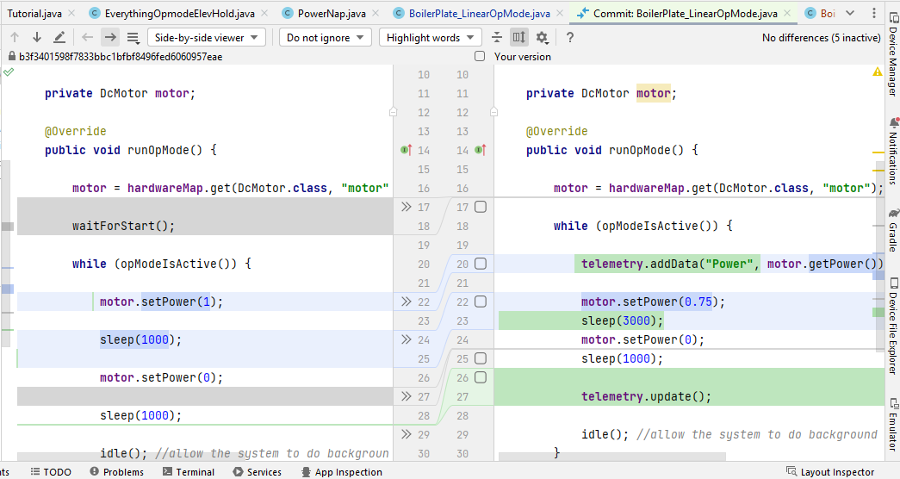

Welcome to Android Studio! (Electric Eel, because of course I install it the day before Flamingo comes out)
We will be working with the section of the toolbar outlined in red below:
Update
This button updates your local copy of the repository to match what is currently on the branch, offering the option to merge files if necessary.
Sometimes it will ask you if you would like to merge your copy with the online branch or rebase your local copy on the online branch. I usually choose Rebase, replacing my local copy with whatever is on the branch. This way they definitely match. With files, however, I usually let it merge them. Sometimes it is unable to merge and will ask you to choose between the local and online files, and I usually choose the one from the online branch. Of course, you can always use your own discretion to determine which is the best option.
If any work has been done on a different computer and committed to the branch, you will want to click this button before doing any work to make sure your local copy contains all the latest changes from the repository.
Commit
This button commits all staged changes to the local repository. (Changes are staged in the Commit pane, which we will cover shortly.) These will not be automatically pushed to the online repository!
Push
This button pushes all commits made since the last push out to the online repository. After a push, when anyone else runs a Git Update, their repository will be updated to match yours.
If there are any conflicts during the push, like an online file being newer than the one you're trying to push, this is a good sign that multiple people have tried to edit the same file, and you should check and coordinate to find the best solution and make sure all important changes manage to get made on the actual GitHub repository.
I do not usually commit or push from the toolbar, I usually do it from the Commit pane, which we will cover soon. You must interact with it to stage changes and write the commit message anyway, so it is often easier to just do everything there.
Show History

This button openes the Git pane at the bottom and shows the log of the changes made to the currently opened file in each commit. You can select the Log tag in the pane to see the log for the entire project.
Rollback

This button allows you to undo the last commit, restoring the files to their previous states. You can choose to only rollback certain files if you wish, but they are all selected by default.
The Commit Pane
Here you can add files to the repository, stage changes, commit those changes, and push them to the online repository.
The Changes portion of the file tree shows files which have changed since the last commit.
- Green files have been changed since the last commit. The file in the repository will be updated with the new changes. (If the online repository has another version of this file with some other changes made since the last commit in your local repository, when you push your file, Git will attempt to merge the changes.)
- Red files have been created since the last commit. The file will be added to the repository and begin being tracked. Alternatively, you could not stage that change and leave the file unversioned. (What you would more likely want in this case is to commit the file locally, then choose not to push it to the online repository.)
The Unversioned Files portion of the file tree shows files which are not tracked in the repository and are not committed. The file still exists in the same folder as the repository, but the changes made to it are not tracked and cannot be rolled back like versioned files can.
Outlined in red above are the buttons to Commit and Commit and Push. The latter is more convenient most of the time, as you will usually want to push your changes to the online repository immediately, especially when you are writing code from one computer and building and testing it from another. (This is a common situation if you like to write code in the classroom and you have to test it in the shop.)
Outlined in green above is the Show Diff button. If you want to see the changes made to a file since the last commit, select that file in the file tree then click this button. Studio will open a new tab with the file as it was last committed on one side and the current file on the other.
Green lines have been added, Gray lines on the original side have been removed, and Blue lines have been unchanged (Studio usually uses this to help you find lines in both files when they don't line up horizontally, as seen in the image above.)
There are many more options you can experiment with if you want to optimize your workflow, but this is enough knowledge to successfully use Git and collaborate with the rest of the team. If you want to get more advanced, you might also want to think about using Git from the Terminal